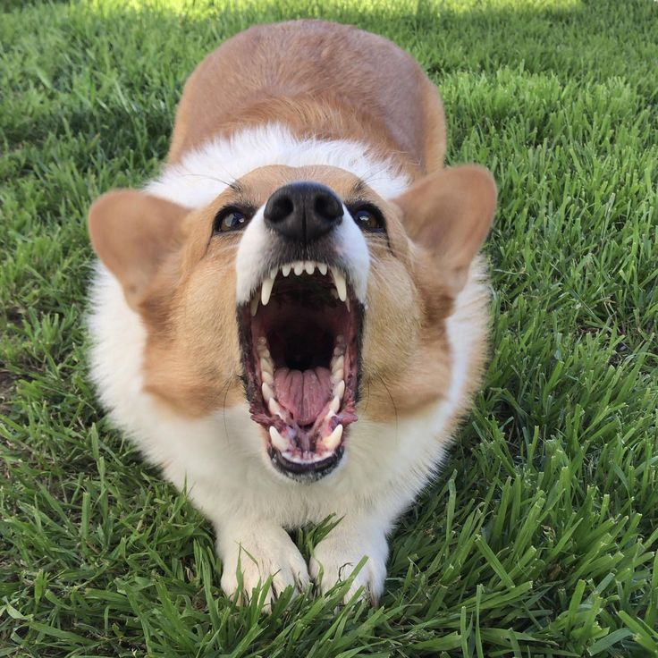
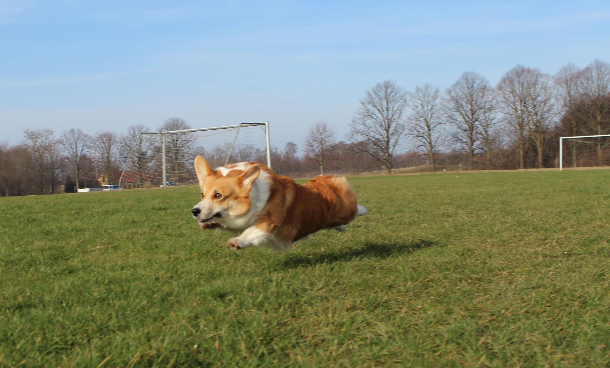

Лай
Одна из важных особенностей, о которой вам сразу стоит узнать — вельш-корги пемброк лает на всех. Это заложено в их природе, ведь они сельскохозяйственные собаки и лают для предупреждения о других животных и незнакомцах. Часто также они могут лаять на знакомого человека в качестве приветствия. Они более возбудимы и чутки в отличие от кардиганов.

Можно научить собаку использовать свой лай в тех случаях, когда это необходимо.
С детьми
Одна из вещей, которая также вам может не понравиться — это то, что пемброки могут слегка покусывать ноги детям. Это не навредит детям, но они могут испугаться. Они ведут себя также, как их предки, которые покусывали ноги непослушных овец, чтобы загнать их в стадо.
Игры
Пемброки любят проводить время со своим хозяином и играть с ним. Также они любят коллективные игры, когда учавствует вся семья. У пемброков общительный и игривый характер.

Они любят играть. С вельш-корги нужно заниматься, ведь эта порода собак очень умная, и ей просто необходимы тренировки и моральное развитие.
Обучение
Корги — умная собака. По этой причине её будет на много проще обучать. Но её ум может сыграть злую шутку с вами, если вы не будете постоянно заниматься своей собакой. В этом случае ей скоро станет скучно, и она начнёт проявлять признаки деструктивного поведения.